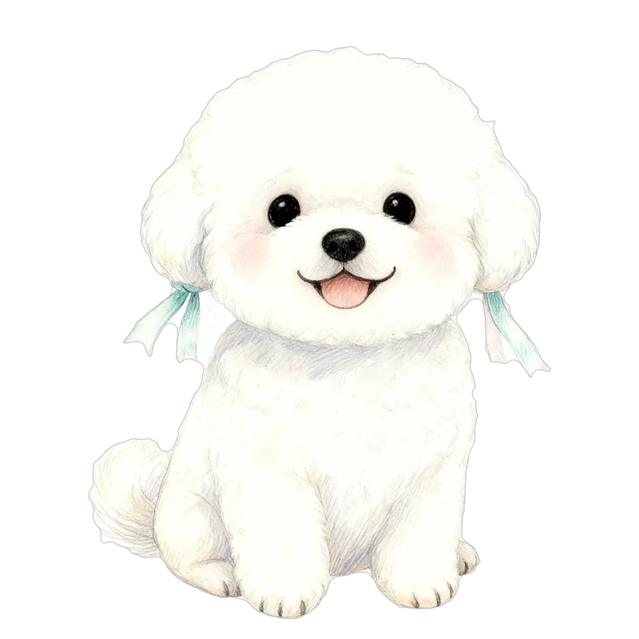
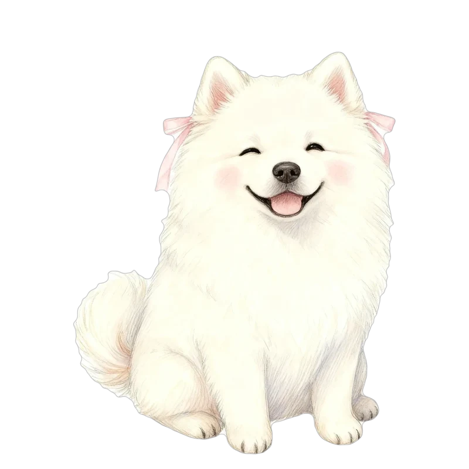
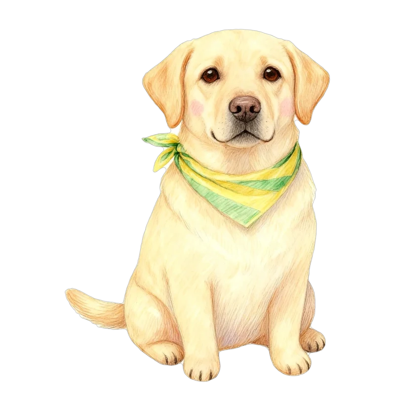
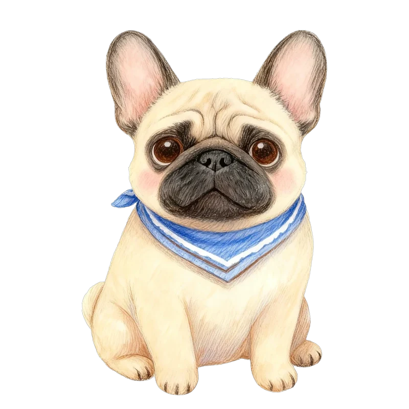
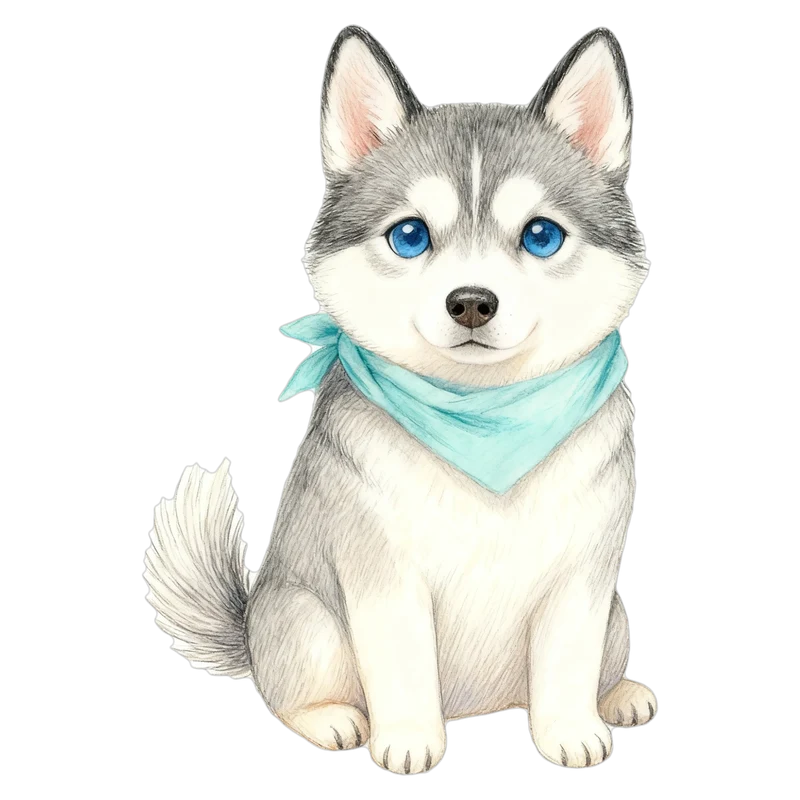

結果ページ アイデア見本
例：こむぎ（パグ）の結果が「心はトイ・プードル」だったとき
見本の文や数字は例です。★はおすすめ。
サブタイプ★おすすめ
いちばん強い性格で、同じ犬種を12通りに分けます。44犬種×12＝528通り。

甘えんぼタイプの
トイ・プードル
うちの子だけの3行コメント★おすすめ
とがっている性格の組み合わせから文を作ります。友だちと同じ犬種でも文がちがいます。
人が大好きなのに、はじめての場所はちょっと苦手。
大好きな人がそばにいると、ぐんと勇気が出る。
安心できる場所で本領を発揮するタイプ。
いちばんとがっている性格を見出しに
その子のいちばん目立つところを、大きな数字で出します。
人なつっこさ 上位4%
100頭中4頭しかいない、だれとでも仲よくなれる子
研究でわかったことのコラム★おすすめ
もとにした研究の結果を、そのまま紹介します。サイトのテーマにぴったりです。
性格のちがいのうち、犬種でわかるのは約9%
約1万8千頭を調べた研究では、1頭1頭の性格のちがいのうち、犬種で説明できたのは1割ほどでした。残りは、その子の個性や育ち方です。体と心の犬種がちがうのは、ふつうのことなんです。
Morrill ほか（2022）Science「パグにしては○○」
自分の犬種の平均とくらべて、いちばん差の大きい性格を言葉にします。
パグにしては、かなりの冒険家！
性格ごとの44犬種ランキング
図鑑で、性格ごとに44犬種を並べかえて見られます。順位はデータから計算した本当の順位です。
- 1

ビション・フリーゼ86 - 1

サモエド86 - 3
 ゴールデン80
ゴールデン80 - 4

ラブラドール79 - 5

フレンチ・ブルドッグ77
16タイプ風のプロフィール★おすすめ
心の犬種ごとに、項目を分けて読みごたえを出します（44犬種ぶん書きます）。
トイ・プードル
甘え上手なかしこいアイドル犬種ごとのテーマカラー
結果ページやカードの色を、心の犬種に合わせて少しずつ変えます。
アプリコット
アイスグレー きつね色
きつね色性格タイプ別あるある
犬種ではなく、答えから出た性格に合わせて出すので、うちの子に当てはまりやすいです。
- じっくり派あるあるお客さんが帰ってから、においチェックに行く
- 甘えんぼあるあるトイレのドアの前で待っている
- 冒険家あるあるお散歩でいつもとちがう道に行きたがる
飼い主さんあるある
体の犬種（飼っている犬種）で出します。飼い主さん同士で共感されて、シェアされやすいネタです。
- パグの飼い主あるあるいびきの録音がスマホにたまっている
- パグの飼い主あるあるしわの間のおそうじが日課
- パグの飼い主あるあるほかのパグを見かけると、つい目で追う
肉球はここぞという3か所だけ
たくさん出さず、ポイントでだけ使います。
番号で「1と4と7」のように教えてください。